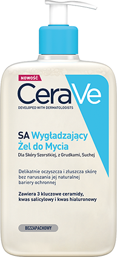
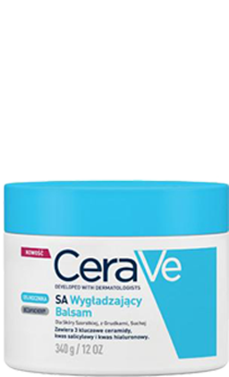
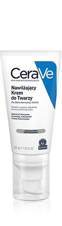

Dla Każdego Typu Skóry, Także Wrażliwej
Delikatna formuła z retinolem
wyrównuje koloryt skóry i redukuje
widoczność porów*
*Ocena konsumencka
Przebarwienia
Ślady potrądzikowe, przebarwienia, nierównomierny koloryt skóry.
Odbudowujące Serum
z Retinolem
Delikatny, zamknięty w kapsułkach retinol wspomaga zmniejszenie widoczności przebarwień i śladów potrądzikowych, bez podrażnień i naruszania bariery ochronnej skóry.
3 kluczowe ceramidy
Odbudowują naturalną barierę ochronną skóry
Kapsułkowy Retinol
Wygładza i niweluje przebarwienia
Ekstrakt z korzenia lukrecji
Pomaga rozjaśnić koloryt skóry
Niacynamid
Koi skórę
Ceramidy
CeraVe to kompozycja trzech kluczowych ceramidów o budowie identycznej z ceramidami zawartymi w skórze: ceramid 1, ceramid 3, ceramid 6-II. Ceramidy są kluczowymi składnikami skóry. Każda skóra ich potrzebuje, a ich niedobór często manifestuje skóra skłonna do trądziku, atopii czy zaczerwienień.
Technologia MVE
Technologia MVE umożliwia stopniowe uwalnianie składników aktywnych, w tym niezbędnych dla skóry ceramidów. Dzięki temu skóra pozostaje nawilżona na dłużej, nawet do 24h po aplikacji.
1
Żel Myjący Przeciw Niedoskonałościom
Umyj twarz używając Żelu Myjącego Przeciw Niedoskonałościom, który oczyszcza pory, wspomaga zmniejszenie niedoskonałości oraz redukuje nadmiar sebum, nie naruszając bariery ochronnej skóry.
Dowiedz się więcej2
Odbudowujące Serum
z Retinolem
Na osuszoną skórę twarzy nałóż Odbudowujące Serum z Retinolem, które wygładza skórę i zmniejsza widoczność zmian potrądzikowych, bez podrażnień i naruszania bariery ochronnej skóry.
3
Nawilżający Krem
do Twarzy
Po aplikacji serum nałóż Nawilżający Krem do Twarzy, który dogłębnie nawilża skórę.